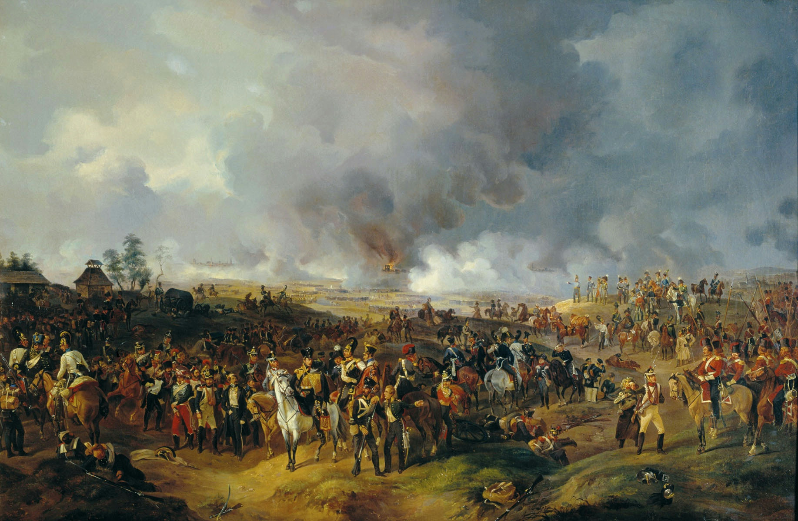

On this Day: Battle of Leipzig
On this day in history, the 16th of October 1813, in the territory of Saxony, Germany, the Battle of Leipzig began. This battle was the theoretical hammer stroke that cracked the Napoleonic anvil. In one of the largest pitched battles in human history, the armies of the 6th Coalition (Austria, Prussia, Russia, Great Britain, Sweden, and a few German states) defeated the armies of French Emperor Napoleon Bonaparte and his few German allies.

The estimated total number of soldiers in this battle varies between 350,000 to 500,000. Napoleon’s total strength was estimated to be around 179,000 at some points, which shows the scale of how outnumbered he was. With their victory, the allies of the 6th Coalition would ride the momentum of this battle to invade France itself. This would ultimately lead to Napoleon abdicating his throne, leading to his first exile. The battle would rage for 4 days, until the French made their withdrawal on the 19th of October. The outcome of this battle effectively sealed Napoleon from Germany. A few garrisons would remain defiant and under siege in Germany and Poland in the coming months, cut off from France. All in turn would surrender upon hearing news that Napoleon had abdicated.